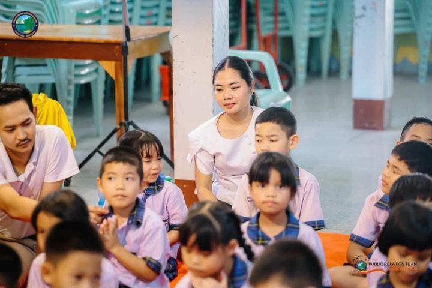
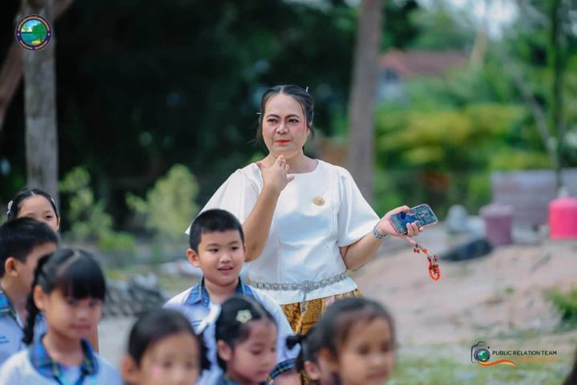
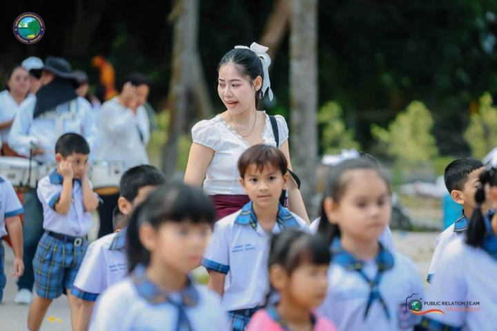
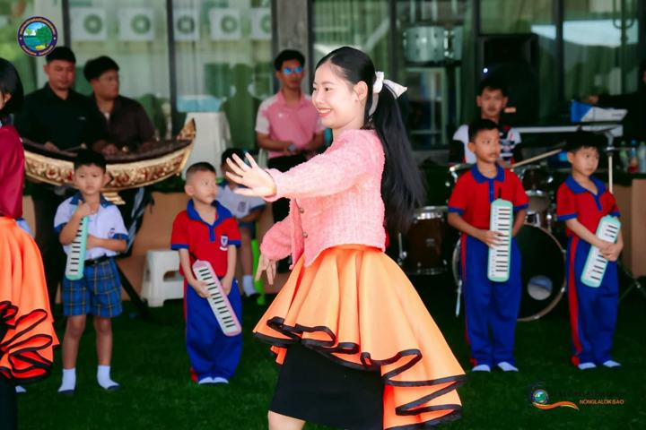
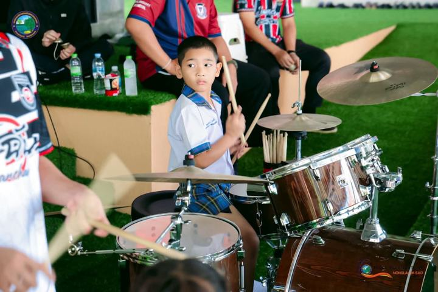
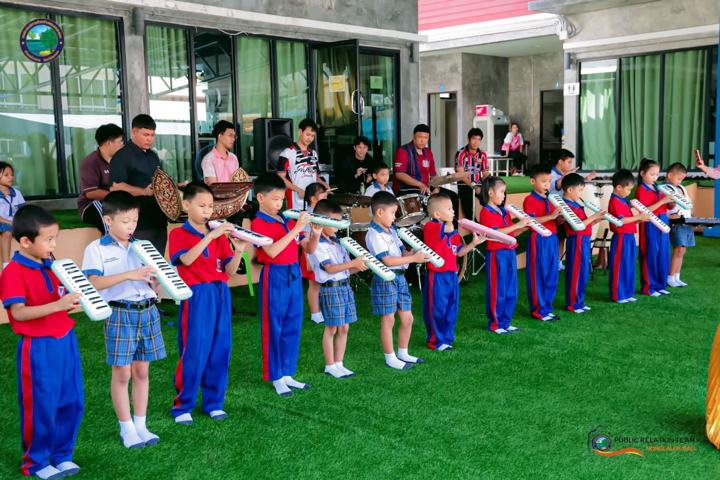
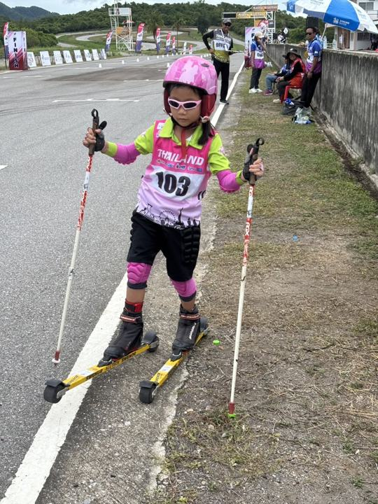
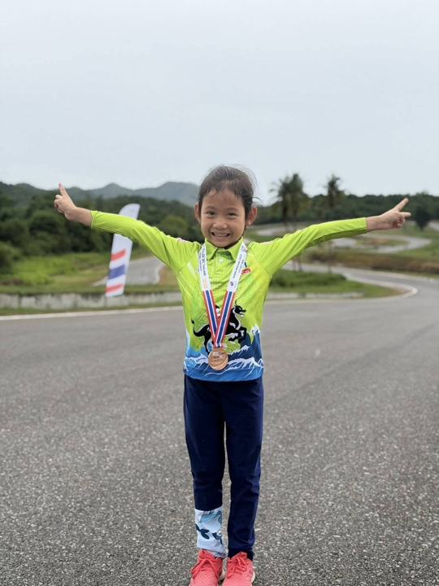
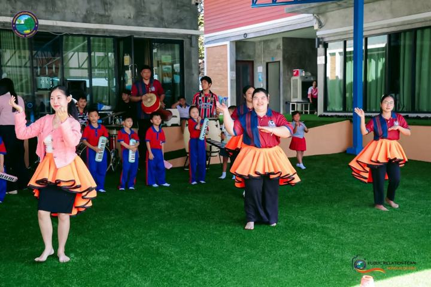
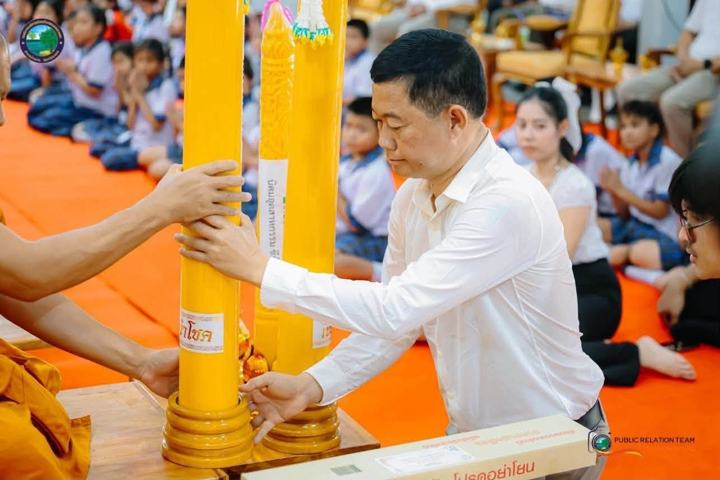

สามภาษา
ไทย · English · 中文 กับครูไทย ครูต่างชาติ และครูจีน ใช้ภาษาจริงทุกวัน
3
AN INVITATION FROM
อนุบาล อบต. หนองละลอก
ยินดีต้อนรับ
สู่โรงเรียนของเรา
♪ เปิดเสียงเพื่อฟังเพลงโรงเรียน
WELCOME TO OUR SCHOOL
ANUBAN NONGLALOK SAO SCHOOL
ปฐมวัย อนุบาล 2–3 · กำลังขยายถึง ป.6
Welcome
โรงเรียนอนุบาลสามภาษาในสังกัดองค์การบริหารส่วนตำบลหนองละลอก สร้างขึ้นเพื่อให้เด็กทุกคนในตำบลได้เรียนในโรงเรียนคุณภาพใกล้บ้าน โดยไม่ต้องเสียค่าเทอม และกำลังขยายให้เรียนต่อเนื่องจนจบชั้นประถมศึกษาปีที่ 6
“นำร่องสองภาษา พัฒนานวัตกรรม
ก้าวนำเทคโนโลยี มีชีวิตพอเพียง”
ไทย อังกฤษ จีน กับครูไทย ครูต่างชาติ และครูจีน
ค่าเทอม เพื่อให้ทุกครอบครัวเข้าถึงได้
อาคารเรียนใหม่ 4 ชั้น พร้อมห้องเรียนอัจฉริยะ
ผู้สำเร็จชั้นอนุบาล 3 ปีการศึกษา 2568
WHY NONGLALOK
ไทย · English · 中文 กับครูไทย ครูต่างชาติ และครูจีน ใช้ภาษาจริงทุกวัน
ไม่เสียค่าเทอม ทุกครอบครัวเข้าถึงได้
จออัจฉริยะ ห้องคอมพิวเตอร์ อาคารใหม่ 4 ชั้น
กำลังขยายชั้นเรียน เรียนต่อเนื่องใกล้บ้าน
ลดความเหลื่อมล้ำ เด็กทุกคนในตำบลมีโอกาสเท่ากัน
LEADERSHIP
“ สมัยก่อนลุงเรียนวัด ไม่มีโรงเรียนสองภาษา ไม่มีครูต่างชาติ จึงกลับมาสร้างโรงเรียนนี้ให้ลูกหลานคนหนองละลอก นายปราโมทย์ ฉันทมิตร์ · จากการสัมภาษณ์โดย ด.ญ.ชนัญชิดา แสงสุข (น้องออกัส)
นโยบายหลักคือ ลดความเหลื่อมล้ำ ให้เด็กทุกคนในตำบลมีโอกาสเท่ากัน
“เราจะไม่ทิ้งใครไว้ข้างหลัง”
มีความรับผิดชอบ สามัคคี ไม่ทะเลาะกัน
ภาษา กีฬา ดนตรี นาฏศิลป์ แล้วต่อยอดให้เก่ง
พื้นฐานแน่นก่อนเรียนต่อมัธยม
FEATURED FILM
เรื่องราวของโรงเรียน จากคำบอกเล่าของท่านนายกและรองนายก · ความยาวประมาณ 8 นาที
Trilingual
เรียนจากการใช้ภาษาจริงทุกวัน ไม่ใช่การท่องจำ และเป็นต้นแบบที่หน่วยงานท้องถิ่นอื่นเดินทางมาศึกษาดูงาน

อ่านออก เขียนได้ คิดเป็น เป็นรากฐานของทุกวิชา

ฝึกฟัง พูด และสื่อสารกับชาวต่างชาติได้อย่างมั่นใจ

ใช้ภาษาจริงและโต้ตอบกับคุณครูในทุกบทเรียน
STUDENT LIFE







GALLERY
แตะที่ภาพเพื่อดูขนาดใหญ่
Recognition
โครงการ 1 ล้านกล้าความดี ตอบแทนคุณแผ่นดิน โดยมูลนิธิเพื่อสังคมไทย มอบแก่ นายปราโมทย์ ฉันทมิตร์
มอบแก่องค์การบริหารส่วนตำบลหนองละลอก
อบต.หัวสำโรง จ.ฉะเชิงเทรา (51 คน) · เทศบาลนครแหลมฉบัง จ.ชลบุรี · อบต.แปลงยาว (160 คน)
See you at school